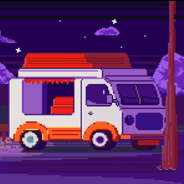

Фритрек и нулевой спринт: Подготовка к работе

</HTML>
Это было самое начало пути. На этом этапе важно было проникнуться основами и настроиться на учёбу. И, возможно, подумать, как новые знания могут повлиять на ваше будущее.
"Классный старт! Всё казалось таким новым, и я абсолютно не знала, чего ожидать. Но было здорово учиться и думать о том, как приобретённые навыки могут изменить моё будущее."